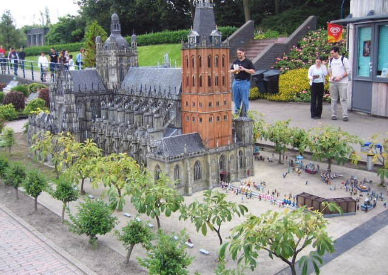
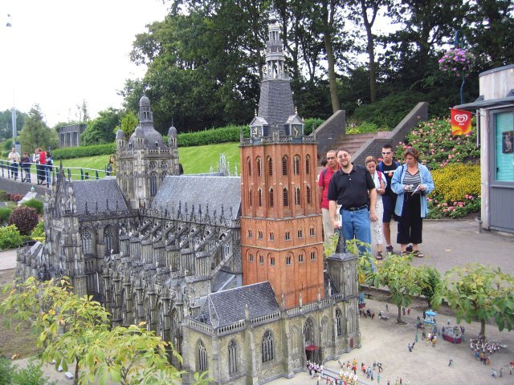

This sign outside Madurodam was cool, and I got to see approximately how far, in kilometers, I was from home (near New York) at the moment.
Upon entering Madurodam, the first thing you see is this tiny anti-fire boat squirting out a miniature fire on a miniature oil tanker.
There's a sign near the entrance that points out this spot as being the best spot to take a picture of all of Madurodam. I'm sure this picture has been taken before, and mine is no different. So much for originality.
Here's miniature cows peacefully grazing the overgrown grass, about to be eaten by the gargantuan crow from hell.
Miniature soldiers form a miniature army, standing in columns opposite from the miniature tanks. If I have to type miniature one more time, I'm going to bite my fingers off. I type "tiny" from now on.

A miniaturIZED version of a very impressive church. If you pay 10 eurocents, you see the little trail of tiny people scooting in and out of the building, as though they were being bought at a grocery store.

A giant Miller is about to wreak havoc upon the unsuspecting church, destroying some tiny dude's wedding.
Here's another nice view of buildings throughout Madurodam. They really didn't look so impressive close up, but I'm sure someone spent a lot of time doing something, nonetheless.
The wavy handrail seemed to fit the theme of Madurodam, waviness.

In a building behind the whole min..err..tiny city, there was a building housing an exhibit of the ancient Dutch, and the way they lived.
I want my future house to look like this, except bigger.
You can see this tiny river was defiled with huge circular chunks of reflective metal alloys.
I didn't get a nice picture of a typical dutch windmill, so this will fit the bill.
A tiny picture of another tiny building.
This possibly is the most impressive-looking picture I took in Madurodam. To the back and right, you can see the building you go through to enter Madurodam.
More representations of interesting buildings, surrounded by tiny cars. Okay, I'm getting sick of the word "tiny" now. I'll just type "small".
This fish was not small.
Here's a small version of a creatively designed bridge. You get to walk across them Godzilla-style, and they actually bounce a bit. Stomping may not have been a good idea, but I did not fear falling into the small chasm below.
These fish were quite rabid for bread crumbs. I'm sure they get fed all the time. They've evolved to climb to the surface when humans pass near.
Here was a nice Eindhoven building to take a picture of.
This is the miniature airport. KLM is the major Dutch airline.
This was amusing. You press buttons to make the car spin out at various spots throughout the track.
Pleasant-looking buildings line one of the small roads. "Small" is pretty drab. I'll go out with a bang and use "infinitesimal".
Just a pretty scene decorated with an infinitesimal bridge. They hired a some hard working gardeners to take care of the infinitesimal plant life.
Here's a sculpture inspired by Gulliver's Travels that was lying near the door in the entry/exit building.
And finally we leave the miniature-laden Madurodam. I figure I should take at least one tiny, infinitesimally small picture of the entrance before I go.
Back